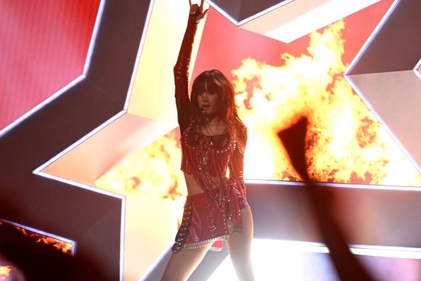
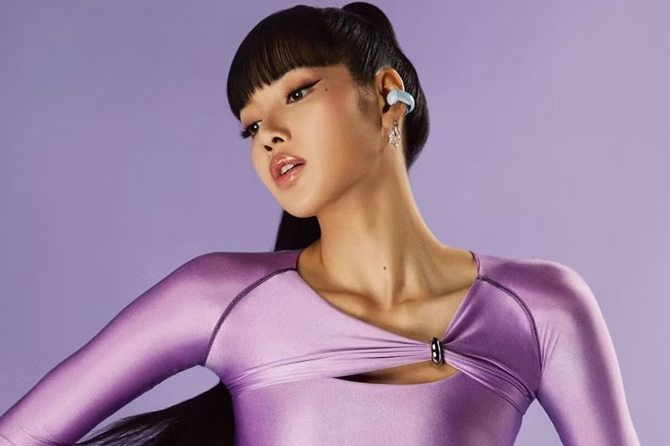
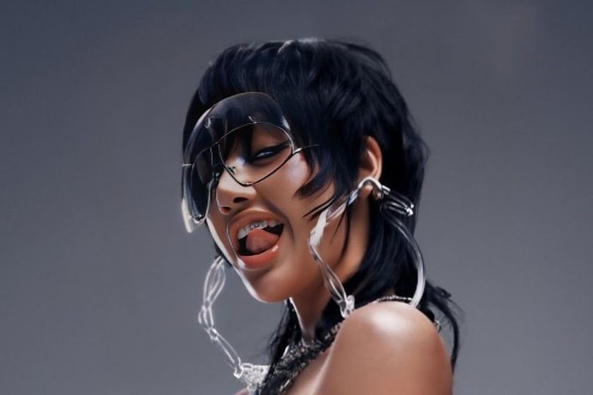
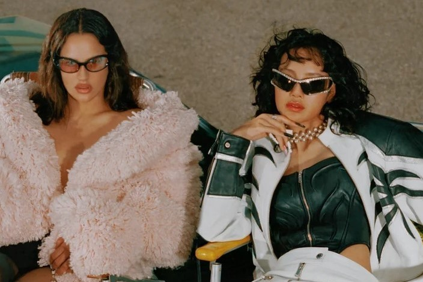

Lisa je zmagala za "najboljši K-Pop" na podelitvi VMA 2024

Lisa izvaja skladbo »New Woman« in »Rockstar« na podelitvi VMA 2024
LISA na rdeči preprogi VMA 2024

LISA x BOSE “Hear It All. All The Time.”

Lisin singel “ROCKSTAR” je dosegel 200 milijonov predvajanj na Spotify-ju
